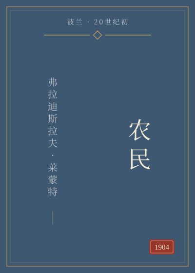
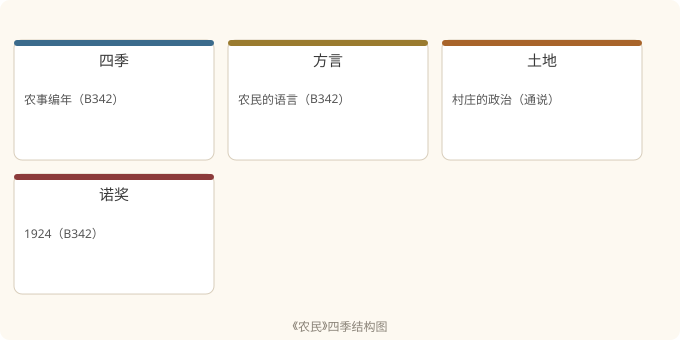

农民
一、基本信息
| 作者 | 弗拉迪斯拉夫·莱蒙特 |
|---|---|
| 成书/出版 | 1904-09年（Britannica B342：Chłopi 四卷出版——'won for Reymont the Nobel Prize'） Wladyslaw Reymont — Encyclopaedia Britannica（百科全书） |
| 国别/地区 | 波兰 |
| 时代 | 近代 · 20世纪初 |
| 体裁 | 长篇小说（四卷） |
| 语言 | 波兰语 |

《农民》四季结构图（主题·结构图）
二、创作背景
Britannica（B342）：Chłopi（农民, 1904-09）四卷——'a chronicle of peasant life during the four seasons of a year'（一年四季农民生活的编年）。
Britannica（B342）：'Written almost entirely in peasant dialect'——几乎全用农民方言写成。
Britannica（B342）：'won for Reymont the Nobel Prize'——1924年诺奖之获奖作。
三、内容脉络
四季结构：秋、冬、春、夏的村庄编年（卷次对应通说待核——B342未载卷名）。
热乌雷莫村：土地、婚姻与教堂的政治（村名与情节通说待核）。
四、主要人物表
| 人物 | 身份 | 说明 |
|---|---|---|
| 安蒂克 | 青年农民 | （通说待核，B342未载） |
| 波瑞娜 | 安蒂克之妻 | （通说待核，B342未载） |
五、主题与艺术特点
- 四季农事的编年体（B342）。
- 方言书写的农民史诗（B342：peasant dialect）。
- 土地与婚姻的政治（通说待核）。
六、影响与评论
- Britannica：'won for Reymont the Nobel Prize'（B342）。
Wladyslaw Reymont — Encyclopaedia Britannica（百科全书） - Britannica：1973年拍成电影（B342：filmed 1973）。
Wladyslaw Reymont — Encyclopaedia Britannica（百科全书）
七、阅读建议
难点
- 方言译本的失落感。
- 波兰乡村的教会与家族结构。
- 《农民》中译本（人民文学等——通说待核）。
- 波兰文原版。
波兰小说首选；可后接《福地》。
八、待核实
- 四季卷名（秋/冬/春/夏）核对（B342未载卷次名）。
- 安蒂克/波瑞娜人名核对（B342未载）。
- 热乌雷莫村名待核。